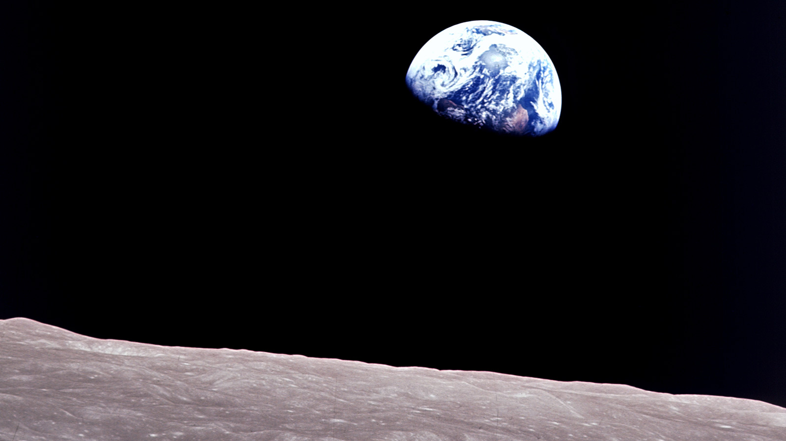
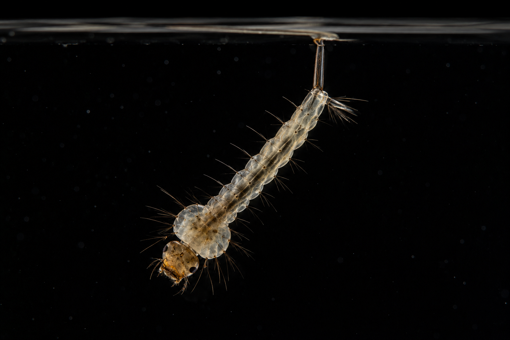
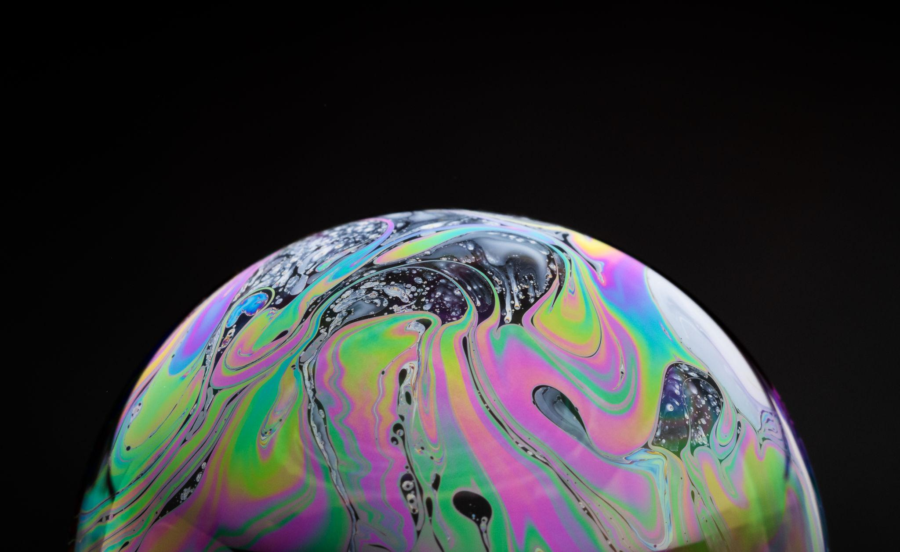

Wir bleiben stehen.
Wir schauen genau hin.



Ihr habt beschrieben, was ihr wirklich sehen konntet.
Ihr habt überlegt, was euch daran auffällt.
Ihr habt überlegt, was ihr herausfinden möchtet.
UNSERE ERSTE FORSCHERREGEL
Wir stellen Fragen
über die Welt.
Welche Frage möchtest du unbedingt festhalten?
Schreibe deine Frage auf die Karte.
Du darfst darunter schreiben oder zeichnen, warum dich die Frage interessiert.
Heute habt ihr begonnen,
… übernehmt ihr Verantwortung für euer Forschungsteam.